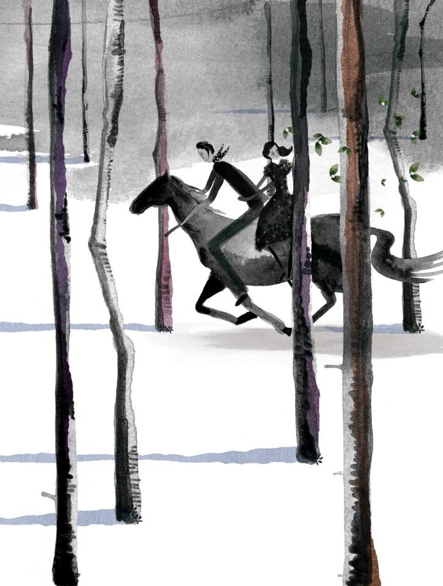
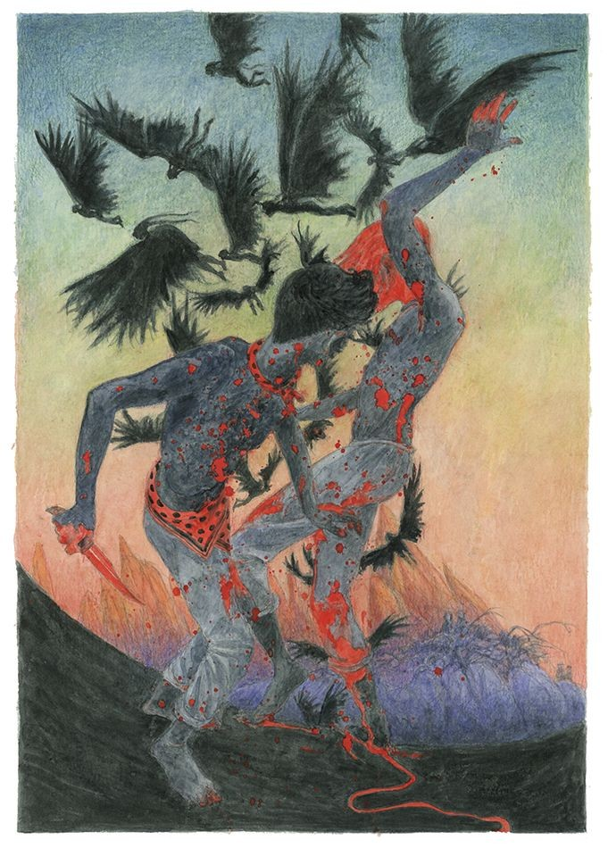

Breve resumen de la obra
Esta obra teatral consta en tres actos y siete cuadros, explorando temas tales como la pasión, el destino, y la muerte a traves de la historia de una boda que termina en tragedia. La obra está llena de drama,desencuentros y desilución.
 